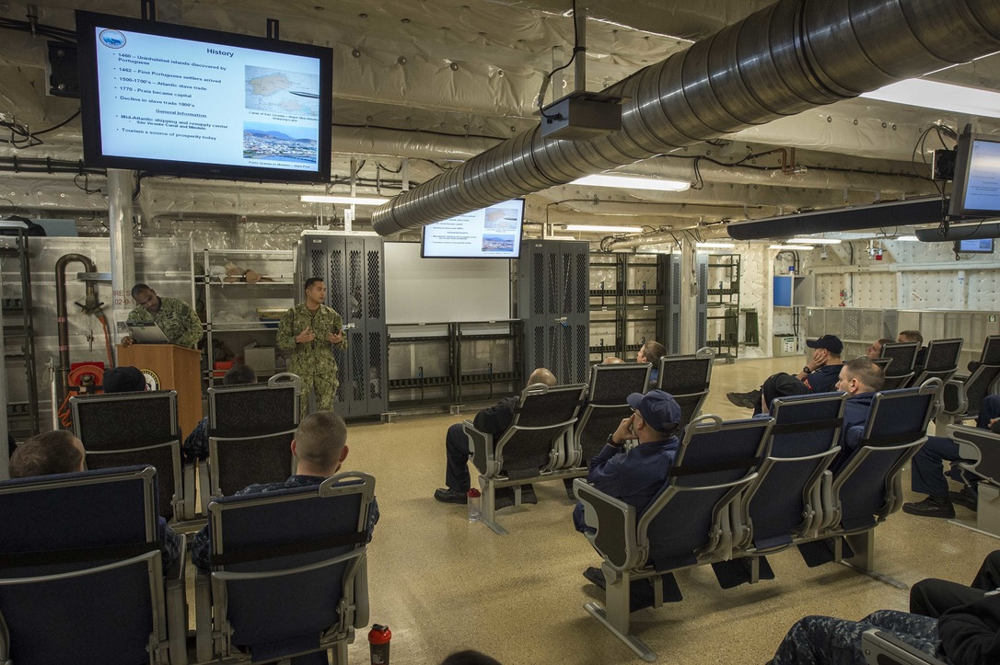
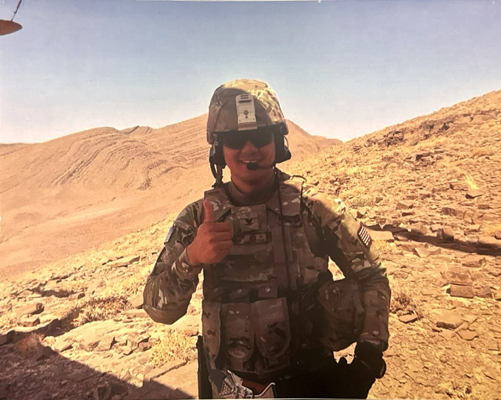

I joined the Navy to not only serve my country but to give back to it as it gave my family an opportunity to live a better life.
During my time, I was able to travel to many different countries and experience different cultures. I was also able to meet many different people and make lifelong friends.

My favorite memory was when I was deployed to Afghanistan. It was one of the biggest thrills of my life and I was able to experience a different culture and meet new people. I was also able to see the beauty of the country and the people who live there. Most importantly it's where I truly learned the meaning of service, sacrifice, and teamwork.